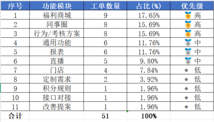
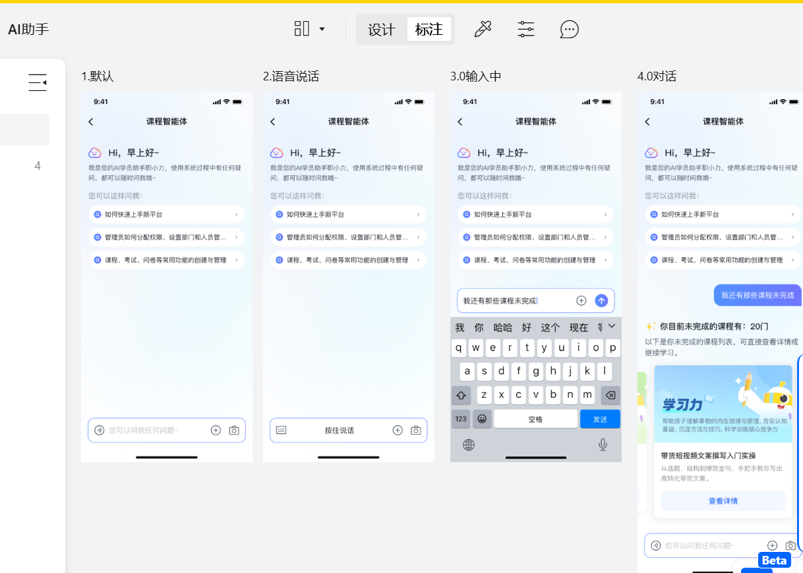
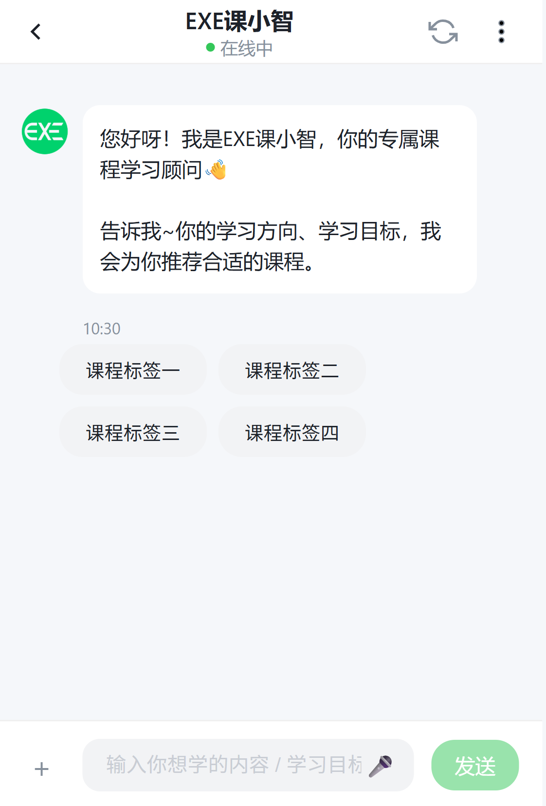
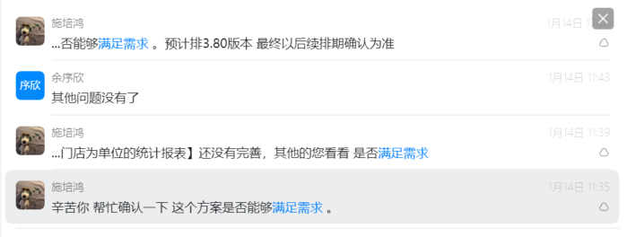
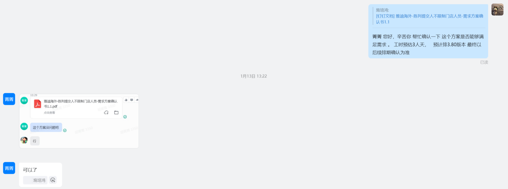
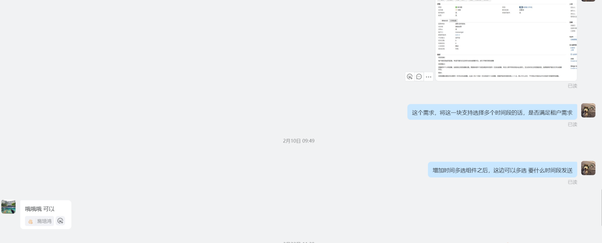

汇报人
施培鸿
部门
产品规划部
岗位
产品经理
入职时间
2026.01.04
降低边际成本，提升产品通用性
洞察行业需求，推动产品优化
打造差异化壁垒，业务增长第二曲线
我已全面承接执掌功能迭代需求、二开需求、AI课程智能体设计三大工作，完成试用期既定目标。

我始终围绕SaaS产品的本质开展工作 以功能迭代夯实标准产品核心（降低边际成本），以二开交付推动产品优化（洞察行业需求），以智能体设计打造创新增长壁垒（打造第二曲线）。
SaaS的毛利来自于标准化。
标准功能的每一次优化，都是在提高边际成本。
"我认为不仅仅是在简单的加功能，而是在通过优化产品的标准功能，提升全租户的续费意愿。"
二开不是"被动妥协"，而是对市场真实需求的调研。
通过二开解决"生存问题"，通过抽象解决"共性问题"。
零售行业定制需求
家居行业定制需求
服装行业定制需求
快消行业定制需求
将共性度高的需求抽象成标准化功能，减少未来同类需求的迭代成本，实现"定制需求产品化"。
"二开是商业收入的来源，更是洞察行业痛点的窗口。我通过'定制需求产品化'，让非标需求反哺标准产品。"
在同质化严重的L&D市场，AI Agent是将产品从"数字化工具"进化为"业务伙伴"的路径之一。
打造差异化竞争优势，使平台从单纯的"线上存课容器"升级为"AI智慧学习平台"，为2026年职行力业务增长打下基础
学员找课难度高
管理员完课率低
企业内训中课件制作难
员工互动少
智能对话精准匹配
基于历史数据推荐
前瞻功能规划中


智能体是我们产品的第二增长曲线。它解决的不是'有没有'的问题，而是'如何让知识真正流转起来'。
"SaaS PM的本质是在"标准化的效率"与"个性化的价值"之间，寻找平衡点"
思考如何通过一套通用逻辑解决80%的共性问题，让产品跑得快、卖得广（降低边际成本）。
思考如何通过灵活的配置与二开解决20%的核心痛点，让大客户离不开、愿续费（提升商业壁垒）。
我的平衡术：把客户的"定制诉求"转化为产品的"模块化能力"，让今天的二开变成明天的卖点。



深度对齐2026年产品计划"门店工作台"，将过往经验与业务需求深度结合，打造更符合市场需求的产品功能。
将AI智能体深度嵌入执掌功能，实现从"手动检索"到"对话驱动"的交互升级，提升存量功能的智能化体验。
感谢公司提供的平台与机会，未来我将继续以结果为导向，为公司创造更多价值